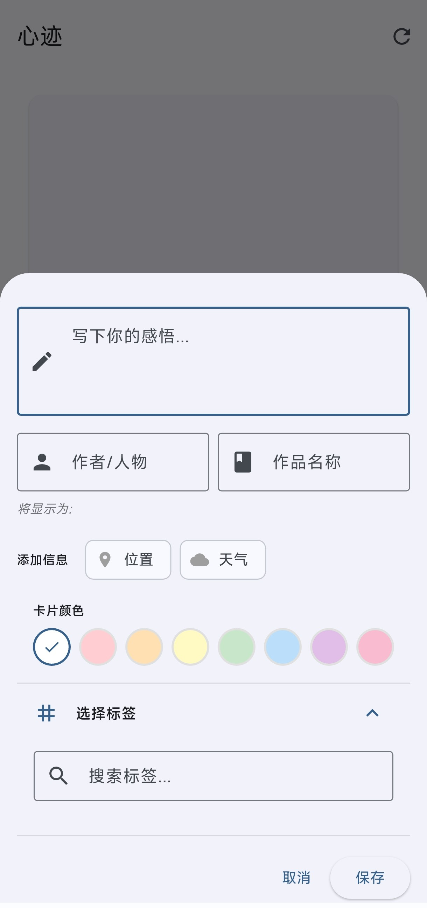
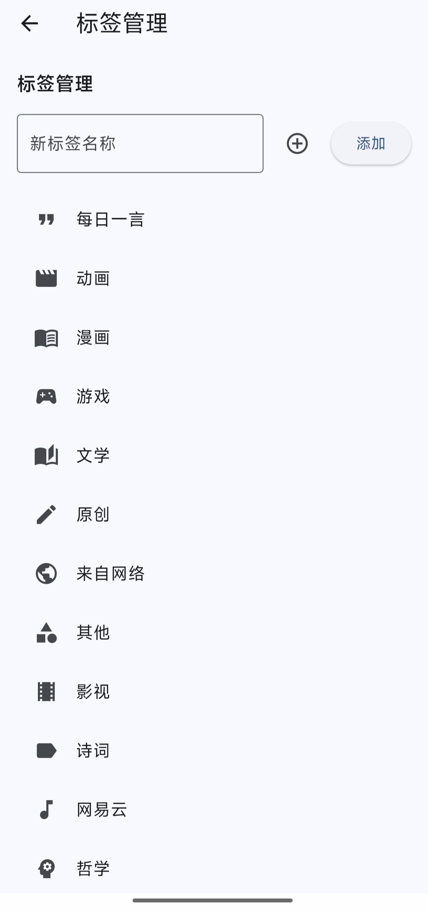
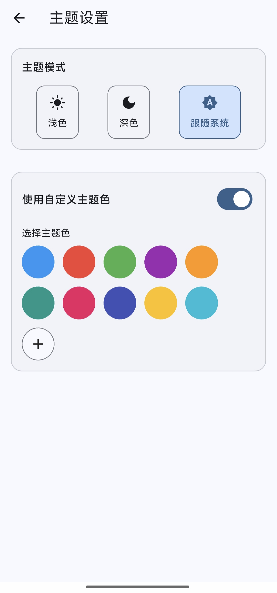
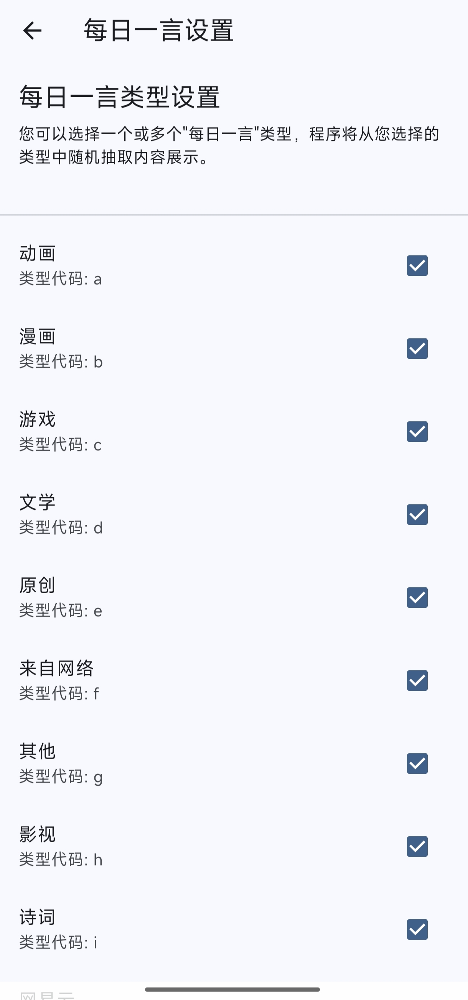

核心功能
Core Features
探索心迹如何帮助你捕捉、整理和深化你的想法。点击下方卡片查看详情。
Discover how ThoughtEcho helps you capture, organize, and deepen your ideas. Click cards below for details.
灵感捕捉
Inspiration Capture
随时随地记录文字、想法和待办事项...
Record text, ideas, and to-dos anytime, anywhere...
心迹提供了一个简洁的编辑器，让你能快速记录瞬间的灵感、深入的思考或是简单的待办列表。支持标准的 Markdown 语法，让你的笔记排版清晰、重点突出。无论是代码片段、引用还是列表，都能轻松搞定。
ThoughtEcho provides a clean editor for quickly capturing fleeting inspirations, deep thoughts, or simple to-do lists. Standard Markdown syntax is supported, making your notes well-organized and highlighting key points. Code snippets, quotes, or lists are handled with ease.

标签管理
Tag Management
使用灵活的标签系统组织笔记...
Organize notes with a flexible tagging system...
告别混乱！通过为笔记添加一个或多个标签，你可以轻松地对信息进行归类和连接。需要查找所有关于“项目A”的笔记？或者所有“读书心得”？只需点击对应标签即可。标签管理界面让你方便地查看、重命名或删除标签。
Say goodbye to chaos! By adding one or more tags to your notes, you can easily categorize and connect information. Need to find all notes about "Project A"? Or all "Book Reviews"? Just click the corresponding tag. The tag management interface allows you to conveniently view, rename, or delete tags.

AI 洞察 (开发中)
AI Insights (WIP)
利用 AI 分析笔记内容，提供总结、关联...
Leverage AI to analyze note content, providing summaries, connections...
这不仅仅是记录。我们正在探索如何利用 AI 的力量，让你的笔记活起来。未来的版本中，AI 或许能帮你自动总结长篇笔记、发现不同笔记间的隐藏联系，甚至在你写作时提供启发性的建议。敬请期待！
It's more than just recording. We are exploring how to leverage the power of AI to bring your notes to life. In future versions, AI might help you automatically summarize long notes, discover hidden connections between different notes, or even provide inspiring suggestions as you write. Stay tuned!
个性化主题
Personalized Themes
支持浅色、深色模式，并可自定义主题颜色...
Supports light and dark modes, with customizable theme colors...
你的应用，你做主。心迹内置了精心设计的浅色和深色主题，适应不同光线环境。更进一步，你可以从预设的调色板中选择你喜欢的主题色，或者直接指定颜色值，打造完全符合你审美的专属界面。
Your app, your rules. ThoughtEcho comes with well-designed light and dark themes to suit different lighting conditions. Furthermore, you can choose your favorite theme color from a preset palette or specify a color value directly to create an exclusive interface that perfectly matches your aesthetic.

一言集成
Hitokoto Integration
集成一言接口，获取富有人生哲理的句子...
Integrates with the Hitokoto API to display philosophical quotes...
在记录想法的间隙，不妨停下来欣赏一句“一言”。心迹集成了 Hitokoto 接口，可以在应用特定位置（如主页或设置页）展示一句来自 ACGN 或网络的富有哲理或趣味的话。你还可以选择偏好的句子类型，让每次遇见都充满惊喜。
Take a moment between recording thoughts to appreciate a "Hitokoto". ThoughtEcho integrates the Hitokoto API to display a philosophical or interesting quote from ACGN or the web in specific app locations (like the homepage or settings). You can also choose preferred sentence types, making each encounter a delightful surprise.

发展路线图
Development Roadmap
了解我们的开发计划和未来方向。
Learn about our development plans and future direction.
已完成Completed 基础功能上线Foundation Launch
- 笔记创建、编辑、删除
- Note creation, editing, deletion
- Markdown 支持
- Markdown support
- 标签管理系统
- Tag management system
- 浅色/深色主题切换
- Light/dark theme switching
- 自定义主题颜色
- Custom theme colors
- 一言集成与类型选择
- Hitokoto integration and type selection
进行中In Progress 体验优化与近期功能Experience Enhancement & Near-Term Features
- 新用户启动引导流程 (介绍, 权限, 设置)
- New User Onboarding Flow (Intro, Permissions, Settings)
- 剪切板智能检测 (快速添加内容)
- Smart Clipboard Detection (Quick content adding)
- 每日一言推送通知
- Daily Hitokoto Push Notifications
- 数据库性能优化
- Database Performance Optimization
- 持续性能优化与 Bug 修复
- Ongoing Performance Optimization & Bug Fixes
计划中Planned 核心功能增强Core Feature Enhancement
- 增强长文 Markdown 编辑体验
- Enhanced Long-form Markdown Editing Experience
- 支持笔记中插入图片与文件
- Support for Inserting Images & Files in Notes
- 增强 AI 服务 (优化提示词, 自动填充作者等)
- Enhance AI Service (Optimize prompts, auto-fill author, etc.)
- 界面深度自定义 (字体、间距、交互等)
- Deep UI Customization (Font, spacing, interaction, etc.)
计划中Planned 未来探索与底层优化Future Exploration & Underlying Optimization
- 探索 TensorFlow Lite 进行本地笔记分析
- Explore TensorFlow Lite for local note analysis
- 底层重构与原生库引入以提升性能
- Underlying Refactoring & Native Library Introduction for Performance Improvement
快速上手
Quick Start Guide
简单几步，开始使用心迹记录你的想法。
Start using ThoughtEcho to record your ideas in just a few simple steps.
安装与运行
Installation & Running
- 前往 GitHub Releases 页面下载适合你平台的最新版本。
- Go to the GitHub Releases page to download the latest version for your platform.
- 根据你的操作系统进行安装或直接运行。
- Install or run the application according to your operating system.
- (可选) 如果你想自行构建，请确保已安装 Flutter 环境，然后运行以下命令：
- (Optional) If you want to build it yourself, ensure you have the Flutter environment set up, then run the following commands:
git clone https://github.com/Shangjin-Xiao/ThoughtEcho.git
cd ThoughtEcho
flutter pub get
flutter run基本操作
Basic Operations
- 创建笔记：点击主页右下角的 '+' 按钮。
- Create Note: Click the '+' button on the bottom right of the homepage.
- 编辑笔记：在笔记列表或笔记详情页点击笔记内容。
- Edit Note: Click on the note content in the list or detail view.
- 添加标签：在笔记编辑页面，点击标签图标进行添加或管理。
- Add Tags: In the note editing page, click the tag icon to add or manage tags.
- 切换主题：在设置页面选择浅色、深色模式或自定义颜色。
- Switch Theme: Choose light, dark mode, or custom colors in the settings page.
- 查看功能详情：在“核心功能”区域点击卡片即可展开。
- View Feature Details: Click on a card in the "Core Features" section to expand it.